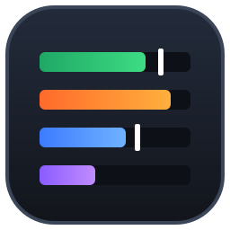
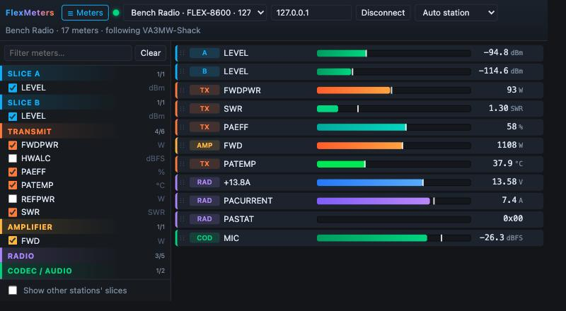
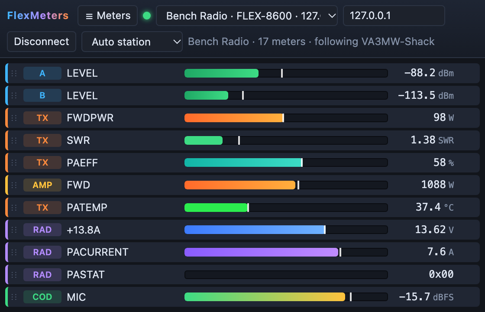

Every meter your FlexRadio has. Only the ones you want.
A small, colour-coded meter panel for FLEX-6000, FLEX-8000 and Aurora radios. Tick the meters you care about and get dense, live rows with peak hold, without the clutter.
Early preview · v0.1.0
FlexMeters connects to your radio on the LAN as a quiet, extra client. It lists every meter the radio announces, from signal level and SWR to PA FET temperature, and shows just the ones you pick.
Radios on your network show up automatically. Connect and the full meter list appears, grouped by slice, transmit, amplifier, radio and codec. Hover a meter for the radio's own description.
Tick meters in the picker, drag rows into any order, and click a bar to set its range. Then close the picker and keep only the meters on screen.
Signal goes green to amber to red. Power is orange, SWR has green, amber and red zones, temperature runs cool to hot, and supply volts and amps get their own hues. Every bar has a peak-hold marker.
It binds to your SmartSDR or Maestro station, so "Slice A" means your slice A. Other operators' slices stay hidden unless you ask for them.
Your radio, station, meters, order and ranges are saved. A meter whose slice closes goes grey and comes back when the slice reopens. If the radio gets a new IP address, FlexMeters finds it again.
It never transmits and never changes radio settings. It only subscribes to status, registers a UDP port for meter data, and binds to a station.
Close the picker and FlexMeters shrinks to a tidy strip of meters. Park it beside your logger or on a second screen. Rows are 24 px tall, so a dozen meters fit in a small window.

No installer and no setup. Settings live in %AppData%\FlexMeters.
Download FlexMeters.exe and start it. Windows SmartScreen may ask once, because the exe is not code-signed yet.
Pick your radio from the list, or type its IP address, and press Connect. If several stations are on the radio, choose yours.
Open ☰ Meters, tick what you want and drag to reorder. Click a bar to set a range. That's it.
Checked receive-only against live radios on firmware v4.3.16 (15 October 2026). Their meter lists differ quite a lot, and FlexMeters shows whatever the radio announces.
For the curious and for anyone writing their own client. Everything here is checked against the FlexLib v4.3.15 API source; file and line citations are in DECISIONS.md.
| Step | What happens |
|---|---|
| Discovery | Radios broadcast a VITA-49 packet on UDP 4992 with serial=… ip=… model=…. |
| Connect | TCP 4992, then sub meter all, sub slice all, sub client all and client bind client_id=…. |
| Meter list | Status lines like meter 7.src=SLC#7.num=0#7.nam=LEVEL#7.unit=dBm#… (fields are split on #), and meter 7 removed. |
| Values | client udpport <port>, then VITA-49 packets of class 0x8002, each holding big-endian uint16 id + int16 raw pairs. |
| Scaling | dB, dBm, dBFS and SWR ÷128 · Volts and Amps ÷256 · °C and °F ÷64 · Watts, %, RPM as sent. TX power arrives in dBm and is shown in watts. |
Go and Wails v2. The Windows build cross-compiles from macOS or Linux, and no C compiler is needed.
# tests go test ./internal/... # Windows exe → build/bin/FlexMeters.exe wails build -platform windows/amd64 -skipbindings # no radio handy? a fake one, plus the UI in any browser go run ./tools/fakeradio -churn go run ./tools/preview # http://127.0.0.1:34200